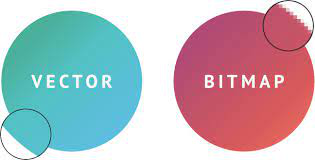

Ik heb al eerder bij kleurmodellen uitgeled wat een pixel is. Bij een plaatje
in een bitmap bestaat het plaatje uit pixels. Des te meer pixels, des te scherper.
Een plaatje in een bitmap heeft 2 eigenschappen:
1. Het kost veel ruimte om het plaatje te downloaden
2. Als je gaat inzoomen dan zie je allemaal lossen pixels.
Een bitmap is handig omdat je er alles mee kan maken er zijn eideloos veel kleurencombinaties mogelijk. Het enige nadeel is dat het heel veel ruimte kost.

Stel je voor je moet een groot plaatje hebben voor een reclame op een gebouw. Dan is het niet handig als je een plaatje van 30 Mb moet downloaden, hiervoor hebben we vector afbeeldingen. Deze plaatjes zijn zonder idenetieke pixels waardoor het veel minder geheugen kost om het plaatje te downloaden. Dit is erg handig voor reclames maar ook voor een fotograaf want je wilt niet dat je camera na 100 foto's al vol zit.
Maar wat is nou precies een vectorafbeelding, een vectorafbeelding is een plaatje waarbij niet elke idenetieke pixel een waarde krijgt maar een vlak een waarde krijgt. De vorm wordt dus opgeslagen. Een voorbeeld hiervan is vierkant 2,2:blauw wat hiermee wordt bedoelt is dat een vierkant van 2 bij 2 blauw is. Hierdoor kost het veel minder ruimte omdat het minder informatie is om te downloaden.
Een groot voordeel is dat onscherpte bij vectorafbeeldingen niet bestaat. Dat komt doordat als de grootte wordt aangepast dan wordt alleen de opgeslagen waarde die de grootte aangeeft aangepast.
Een nadeel van vectorafbeeldingen is dat alleen de vorm kan worden opgeslagen. Een digitale afbeelding bestaat niet alleen uit vormen maar uit heel veel verschillende kleuren. Dan is het niet mogelijk een vectorafbeelding te hebben.